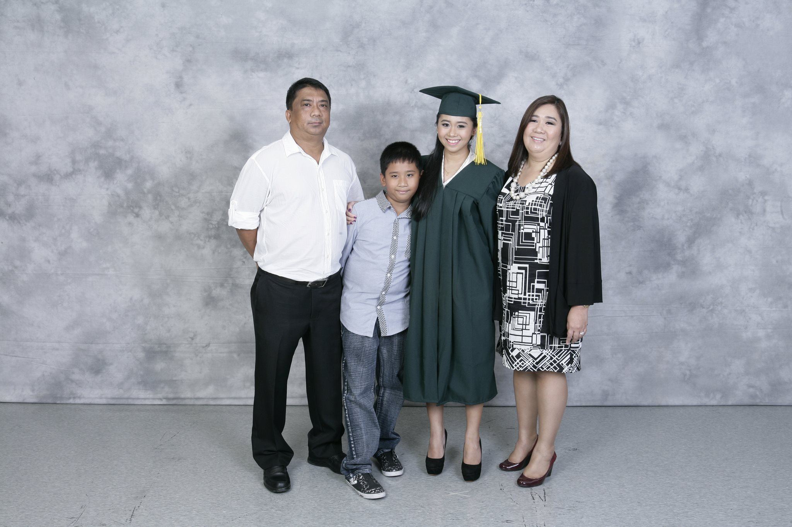
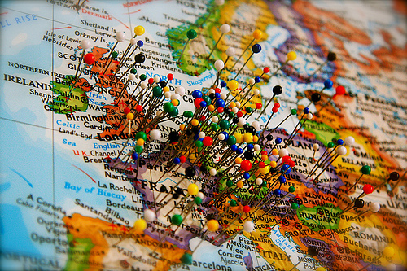
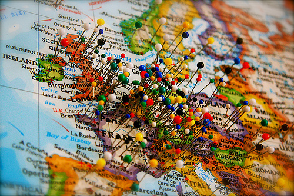

Little Woman
I was born on the 10th of September 1995 in Paranaque City, Metro Manila. For 11 years, we lived in the same city and only moved houses once We moved to the house next to my maternal grandparents' house. I was really close to my grandparents then (as seen in picture). My lolo pogi even nicknamed me Kat-kat then (now it's Kate). My childhood was really spent with them - from sitting on my lolo pogi's lap while driving to going to church early every Sunday to help my lola set-up the altar. Hence it really took a toll on me when I lost both of them at a very young age. Nonetheless, I still have a big family to keep me company. From Kinder to 5th Grade, I studied in Colegio San Agustin, Makati City, where I made some long-term friends.Awkward Stage
 We moved to Singapore and lived there for 4 years (2007-2011), then to Thailand for a year (2011-2012), then moved back to the Philippines for my final high school year (2012-2013). In short, I studied in 3 schools throughout my high school career. Freshman & Sophomore Years: Overseas Family School, Singapore; Junior Year: International School Bangkok, Thailand; Senior Year: International School Manila, Philippines. It was through my experience as a third culture kid (TCK) that I learned to be adaptable and sociable. Noticeably, I began to speak in English more comfortably than my native language, Tagalog. It is also through this experience that I learned who my true friends are.La Vida Loca
I am currently studying in University of the Philippines Los Banos, and taking up BA Communication Arts, majoring in Speech Communication. I am a member of the UPLB Street Jazz Dance Company and AIESEC-UPLB. I am still in the processing of grasping proper time management, correct study habits [for myself], and setting my goals and priorities. Our family also just recently moved out from our house in Paranaque City to a condominium unit in Taguig City. So, again, we are adjusting to a new living environment.
I dreamed a dream


 
I have many dreams in mind, which is why I love my course at the moment because it doesn't limit me in those options. Firstly, I want to be a sports field reporter for Formula 1. Secondly, I want to be a fashion magazine editor and thirdly, a book editor. I also dream on travelling the world someday, checking off places on the world map along the way. If I were to become an F1 sports journalist, then I'm a whole step closer on checking places off my list. But staying on the ground, I plan on getting work experience after graduating then fulfilling a masters degree abroad.

I have many dreams in mind, which is why I love my course at the moment because it doesn't limit me in those options. Firstly, I want to be a sports field reporter for Formula 1. Secondly, I want to be a fashion magazine editor and thirdly, a book editor. I also dream on travelling the world someday, checking off places on the world map along the way. If I were to become an F1 sports journalist, then I'm a whole step closer on checking places off my list. But staying on the ground, I plan on getting work experience after graduating then fulfilling a masters degree abroad.